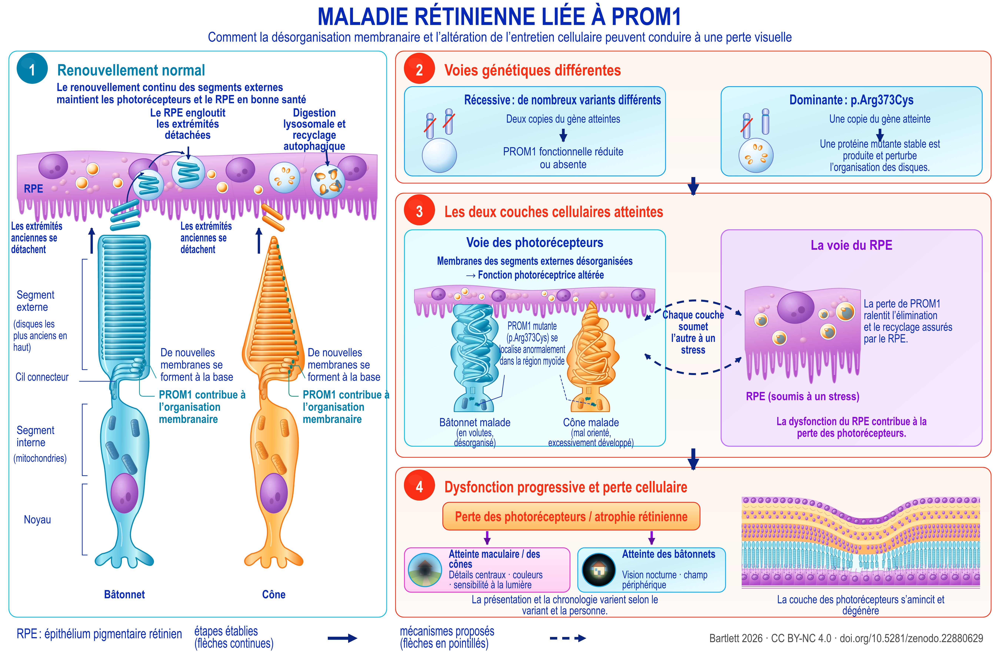

Review
Dégénérescence rétinienne associée à PROM1
Une cartographie des données probantes tenant compte des allèles : mécanismes, interventions et priorités de recherche
English title: PROM1-associated retinal degeneration
Working paper, version 1.90, 21 September 2026.
The Zenodo record also holds an accessible HTML edition, a spoken-text version, a description of the figure and an audiobook.
Abstract
La dégénérescence rétinienne associée à PROM1 englobe des atteintes maculaires dominantes et des dégénérescences photoréceptrices récessives, souvent plus étendues. Leurs modes de transmission et leurs présentations cliniques distincts soulèvent des questions mécanistiques et thérapeutiques différentes. Cette revue et cartographie des données probantes intègre la génétique clinique, l’histoire naturelle, la biologie membranaire, les modèles de photorécepteurs et d’épithélium pigmentaire rétinien (RPE), les interventions précliniques et les enregistrements datés d’études chez l’être humain. L’avancée translationnelle la plus solide est la restauration obtenue dans des systèmes expérimentaux déficients en PROM1, démontrée dans des organoïdes dérivés de patients et chez des souris knockout. Un bénéfice après le début de la maladie est rapporté dans une étude murine consultée en texte intégral et dans un résumé de congrès distinct. La principale extrapolation encore non résolue concerne la maladie à mutation dominante, pour laquelle l’addition génique, la suppression du mutant et le traitement combiné doivent être comparés directement. La littérature mécanistique dépasse la morphogenèse des segments externes : des expériences directes sur le RPE mettent en cause le flux autophagique et l’élimination des segments externes, tandis que des modèles knockout sensibles à la lumière mettent en cause l’endothéline, le facteur de croissance analogue à l’insuline 1 (IGF1) et le stress métabolique. Ces voies nécessitent une interprétation propre à chaque compartiment. Les résultats d’autofluorescence quantitative chez l’être humain limitent la portée d’une explication universelle par un excès de bisrétinoïdes, et les effets protecteurs locaux de l’endothéline dans d’autres génotypes rétiniens s’opposent à considérer cette voie comme uniformément nocive. Les critères d’évaluation cliniques sont stratifiés en conséquence : l’extension de l’atrophie dans les formes dominantes, la contraction de la zone ellipsoïde dans les formes récessives et l’amincissement propre à chaque couche en tomographie par cohérence optique (OCT) mesurent des processus différents et présentent des effets plancher différents. Des études chez l’être humain dont les critères génétiques d’admissibilité sont explicites ou plus larges peuvent inclure la maladie liée à PROM1 ; toutefois, pour la plupart, les enregistrements indiquent qui pouvait y participer plutôt que qui y a effectivement participé, ou quels en ont été les résultats. Sept programmes expérimentaux relient ces distinctions à des comparaisons testables, chacun étant présenté sous la forme du contraste décisif, de la précaution nécessaire et de la décision qu’il permettrait de trancher. Le cadre qui en résulte distingue les thérapies candidates selon l’allèle, le compartiment et le stade de la maladie.


Description of the figure
Maladie rétinienne liée à PROM1. Un modèle de travail de l’affection dans l’état actuel des connaissances : le renouvellement des segments externes et ce qui le perturbe (1, 2), les deux compartiments cellulaires atteints (3) et la perte de vision qui en découle (4). Les pointillés indiquent ce qui est proposé plutôt qu’établi. Les données étayant chaque élément se trouvent dans les sections 3 à 10.
Panneau 1, renouvellement normal. Un photorécepteur à bâtonnet et un photorécepteur à cône sont représentés côte à côte sous l’épithélium pigmentaire rétinien. Chacun est légendé de haut en bas : segment externe, avec les disques les plus anciens au sommet ; cil connecteur ; segment interne, contenant les mitochondries ; et noyau. De nouvelles membranes se forment à la base de chaque segment externe, et PROM1 contribue à leur organisation, tandis que les extrémités les plus anciennes se détachent vers le haut. L’épithélium pigmentaire rétinien englobe ces extrémités détachées et les dégrade par digestion lysosomale et recyclage autophagique.
Panneau 2, les deux voies génétiques. À gauche, la maladie récessive : de nombreux variants différents, deux copies du gène atteintes, entraînant une diminution ou une absence de PROM1 fonctionnelle. À droite, la maladie dominante, p.Arg373Cys : une copie du gène atteinte, à partir de laquelle est produite une protéine mutante stable qui perturbe l’organisation des disques.
Panneau 3, les deux couches cellulaires atteintes. À gauche, la voie des photorécepteurs : la désorganisation des membranes des segments externes altère la fonction des photorécepteurs. Un bâtonnet malade est dessiné sous une forme en volutes désorganisées, et un cône malade avec une orientation anormale et une croissance excessive ; PROM1 mutante, p.Arg373Cys, est mal localisée dans la région myoïde. À droite, la voie de l’épithélium pigmentaire rétinien : la perte de PROM1 ralentit les fonctions d’élimination et de recyclage de cette couche, représentée en état de stress, et son dysfonctionnement contribue à la perte des photorécepteurs. Des flèches courbes en pointillés relient les deux encadrés, avec la mention « chaque couche soumet l’autre à un stress » ; les pointillés désignent ce qui est proposé plutôt qu’établi.
Panneau 4, dysfonctionnement progressif et perte cellulaire. La perte de photorécepteurs et l’atrophie rétinienne qui s’ensuivent se déclinent en deux voies : l’atteinte maculaire et des cônes, qui affecte la perception des détails centraux, des couleurs et la sensibilité à la lumière ; et l’atteinte des bâtonnets, qui affecte la vision nocturne et le champ périphérique. Le tableau et sa chronologie varient selon le variant et la personne. Une coupe adjacente montre l’amincissement et la dégénérescence de la couche des photorécepteurs.
Légende. Les flèches pleines indiquent les étapes établies. Les lignes et flèches en pointillés indiquent ce qui est proposé.
Download the figure (PNG, 5400 × 3600 pixels, CC BY-NC 4.0)
How to cite
Bartlett C. Dégénérescence rétinienne associée à PROM1: Une cartographie des données probantes tenant compte des allèles : mécanismes, interventions et priorités de recherche. Version 1.90. Zenodo, 21 September 2026. https://doi.org/10.5281/zenodo.22880629